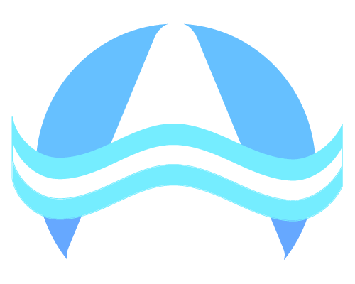

Seleccione el tipo de dato a visualizar:
Temperatura del Agua (°C)
Temperatura del Aire (°C)
Oxígeno Disuelto (mg/l)
pH
Coliformes Fecales (UFC/100ml)
Escherichia Coli (UFC/100ml)
Enterococos (UFC/100ml)
Nitrato (mg/l)
Amonio (mg/l)
Fósforo Total (mg/l)
DBO (mg/l)
Turbiedad (NTU)
Clorofila A (µg/l)
Microcistina (µg/l)
Índice de Calidad del Agua (ICA)
Mediciones
Parámetros
Mapa
AGUAPP

Sitios de medición:
Haga click para comparar
Tabla de Comparación
Parámetros Químicos
Contaminantes Orgánicos e Inorgánicos
Indicadores de Contaminación Biológica
Parámetros físicos:
Color
Espumas
Olores
Material en suspensión
Volver arriba